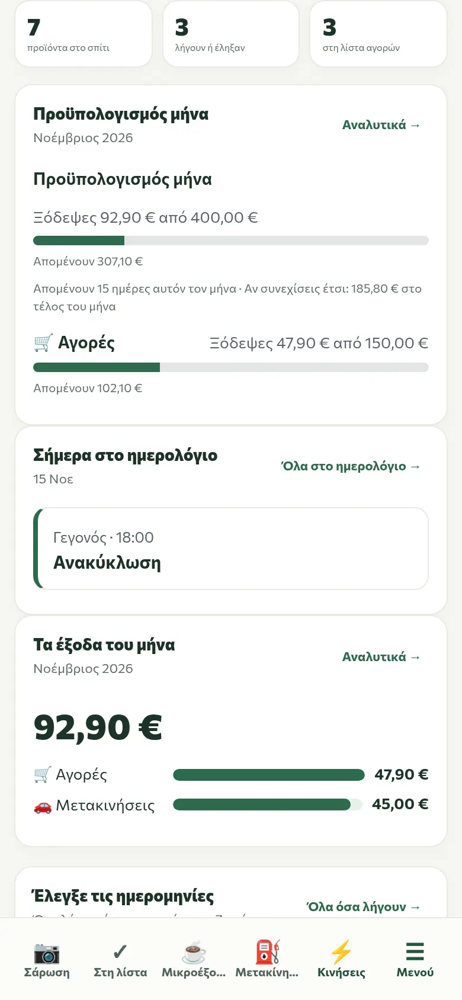
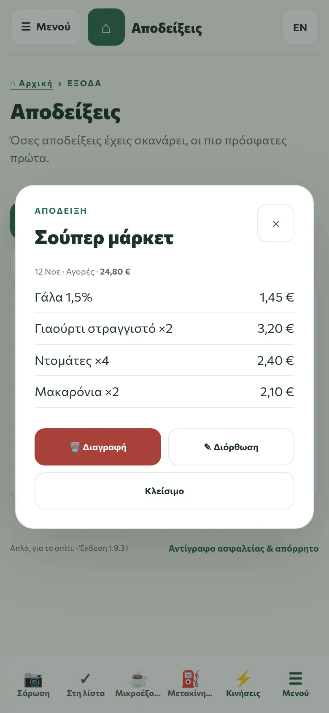
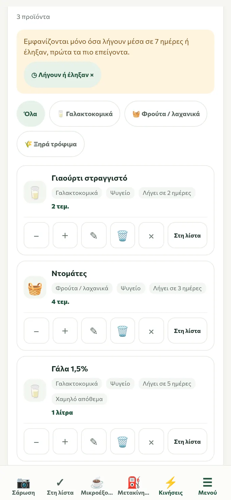
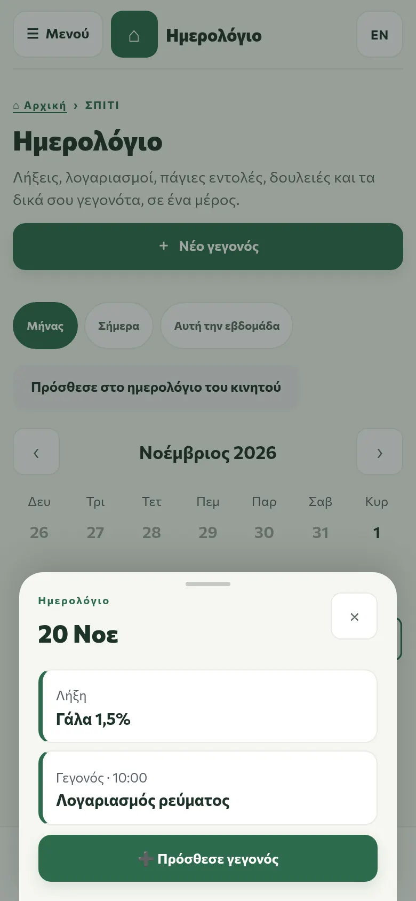

Σπιτοθήκη
Δωρεάν εφαρμογή για το απόθεμα, τις αγορές και τα έξοδα του σπιτιού. Δουλεύει και χωρίς λογαριασμό. Δεν έχει διαφημίσεις και δεν πουλάμε δεδομένα.
Oikos Labs
Η Oikos Labs φτιάχνει απλές εφαρμογές για το σπίτι, με σεβασμό στο απόρρητο. Χωρίς διαφημίσεις και χωρίς πώληση δεδομένων.
Δωρεάν εφαρμογή για το απόθεμα, τις αγορές και τα έξοδα του σπιτιού. Δουλεύει και χωρίς λογαριασμό. Δεν έχει διαφημίσεις και δεν πουλάμε δεδομένα.
Ενδεικτικές οθόνες με δοκιμαστικά δεδομένα — χωρίς λογαριασμό.



